Via Piero della Francesca · Sempione
a lume di candela
Uno spazio intimo dai toni caldi, dove la cucina mediterranea si serve tra le foto in bianco e nero e le candele. Il polpo, i tagliolini al tartufo, il pesce del giorno e i dolci fatti in casa. Come in un borgo antico.
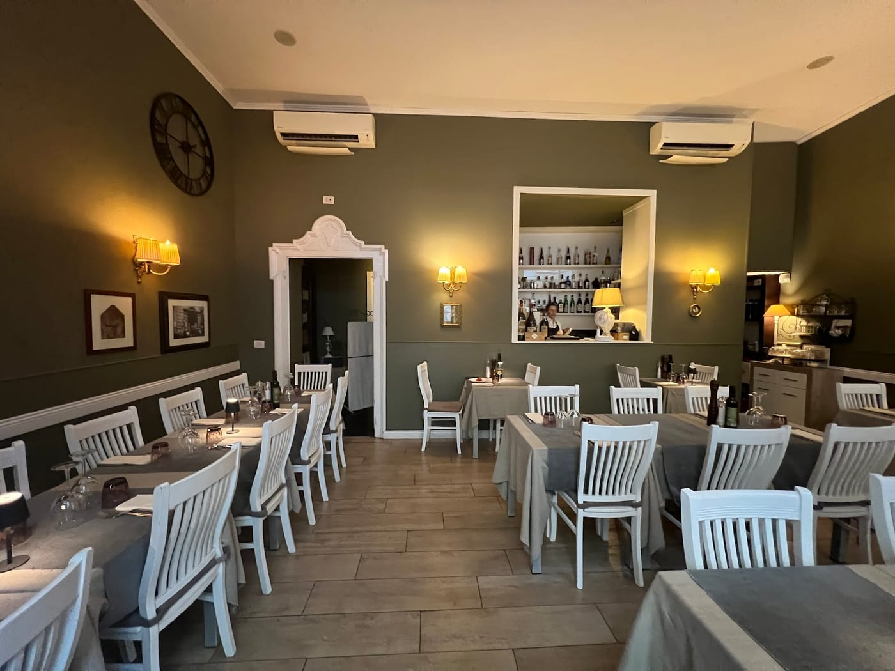
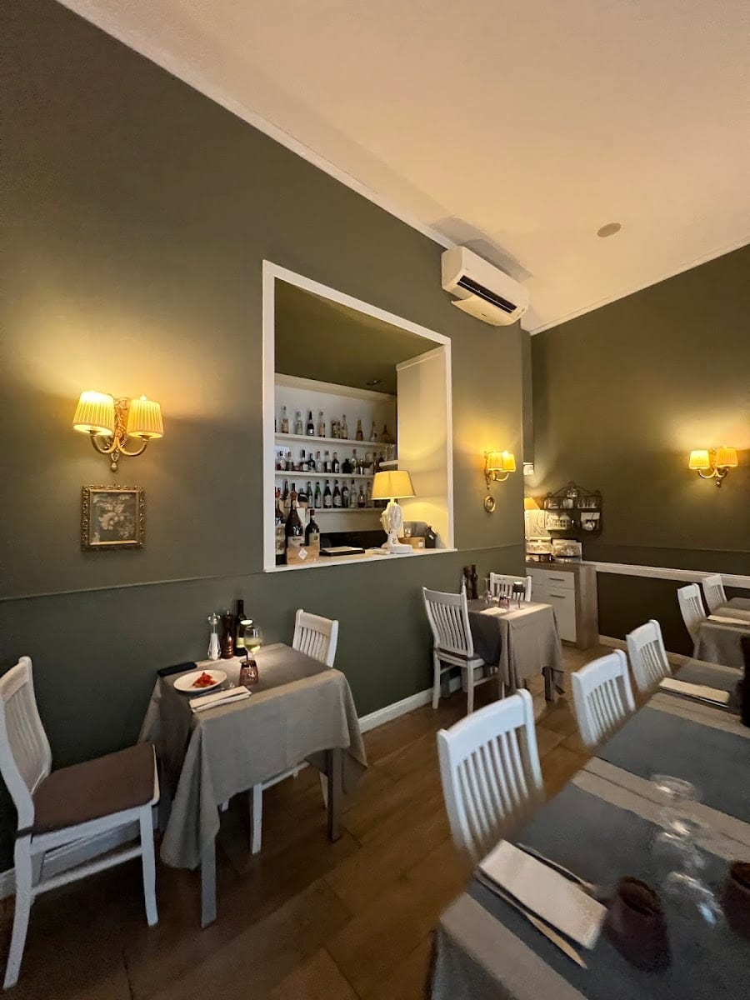
Il borgo
L'Osteria del Borgo Antico è un piccolo mondo a parte, a due passi da Corso Sempione. Poche sale, luci basse, le pareti coperte di fotografie in bianco e nero e le candele sui tavoli.
In cucina, sapori mediterranei essenziali: creatività, originalità e semplicità che si incontrano, tra tradizione e qualche guizzo. Servizio attento e cortese, con un rapporto qualità-prezzo che i clienti amano.
La cucina
Una carta che cambia con le stagioni. Ecco alcuni dei piatti che ci raccontano.
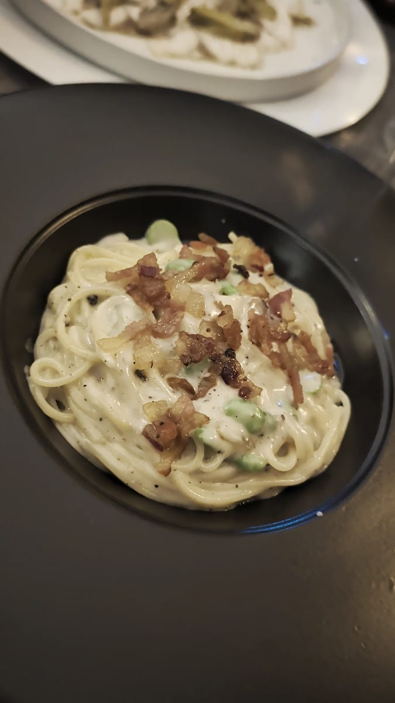
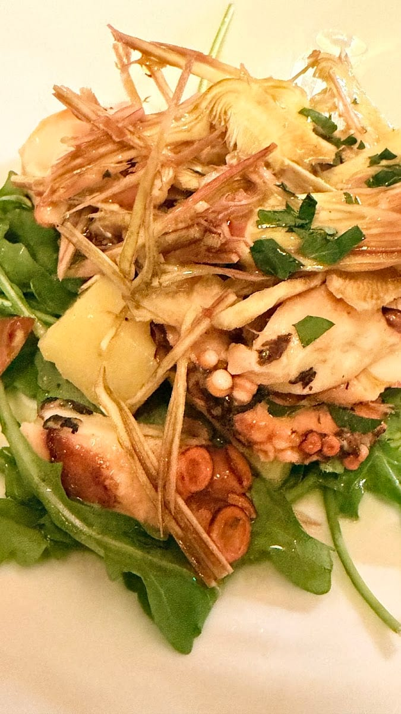
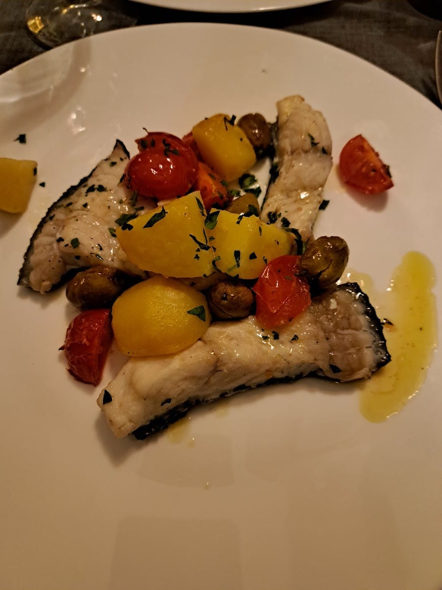
I piatti cambiano con il mercato e la stagione: chiedeteci i consigli della sera.
Alle pareti
Le nostre pareti raccontano storie. Passaci sopra con lo sguardo — e si accendono di colore.
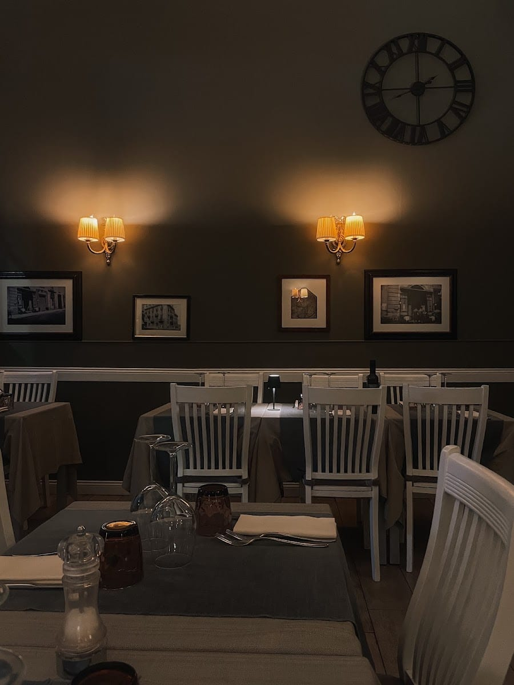
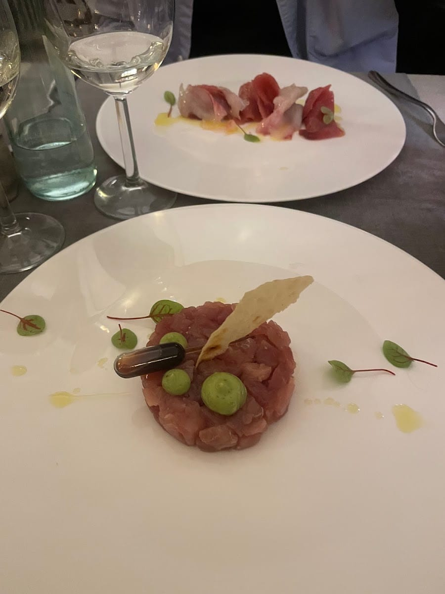
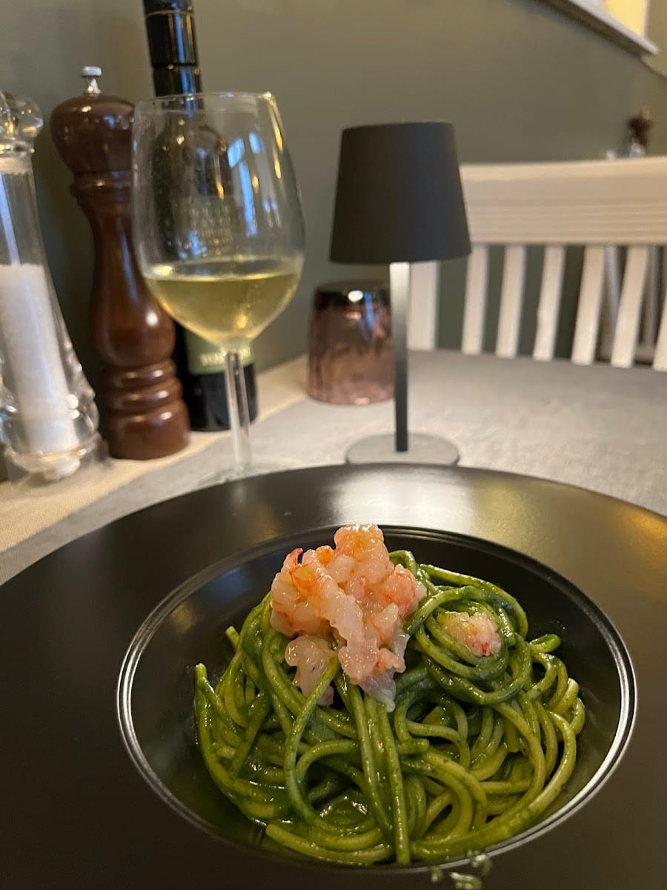
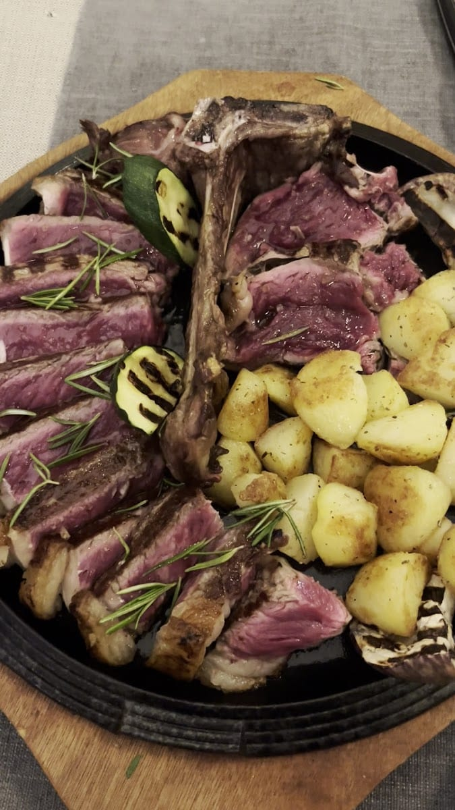
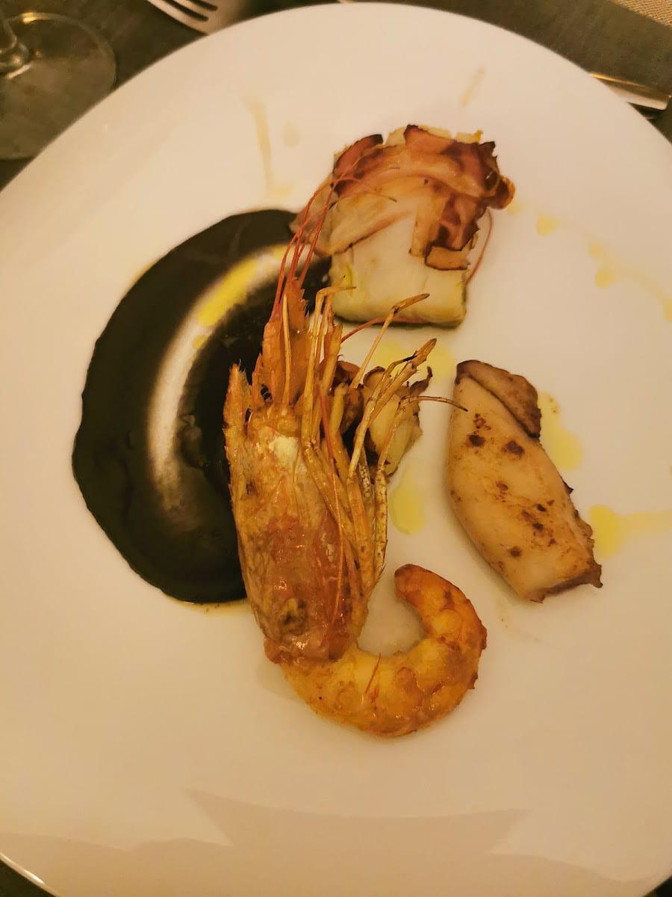
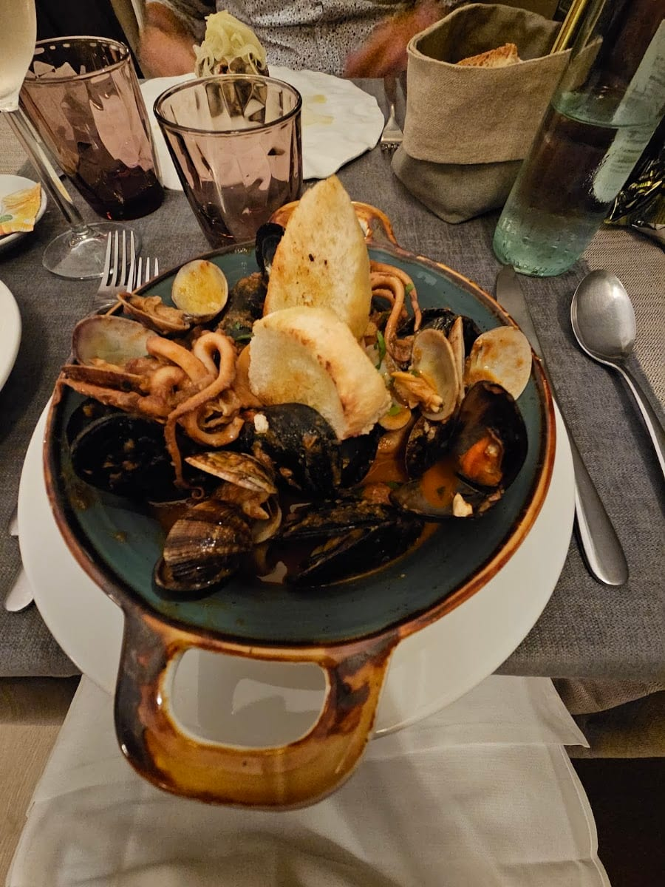
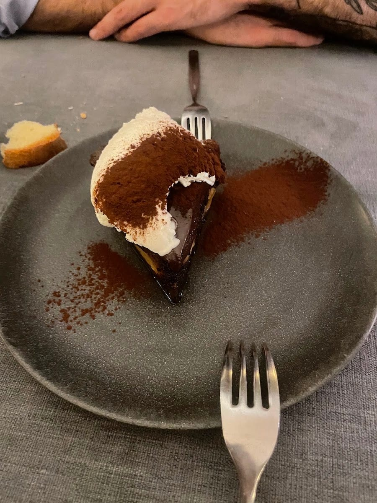
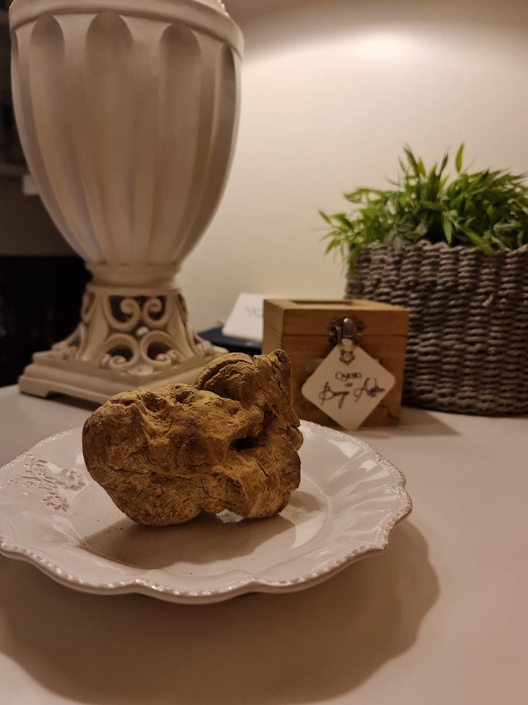
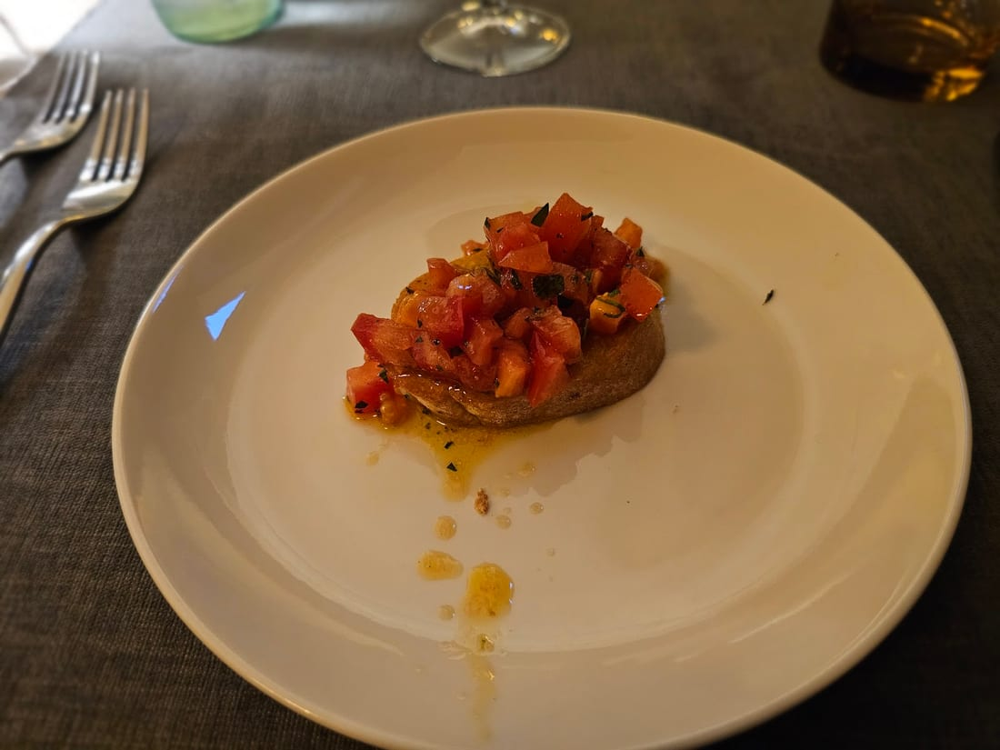
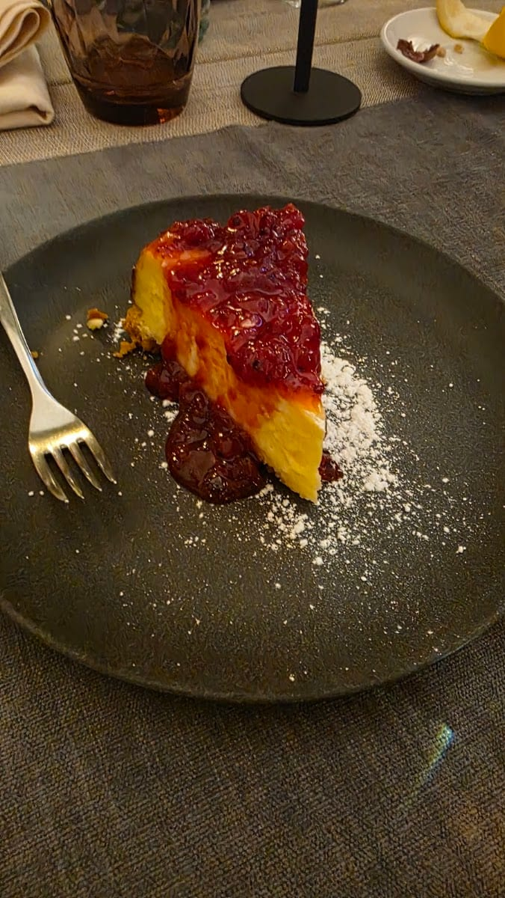
Le voci
Cena davvero piacevole. Ho iniziato con un antipasto di polpo, tenerissimo e ben condito, davvero sopra le aspettative. Come primo, linguine con pesto di pistacchio e gambero rosso: equilibrate e saporite.
Tod · ★★★★★
Kind, friendly staff, good service and fresh, tasty dishes. Some “welcome” bruschetta, tartare and carpaccio to start, then tagliolini with scampi and gamberoni; for dessert, a slice of pear cake.
Anna M · ★★★★★
Tagliata servita su padella a regola d'arte. E i dolci? Spettacolari.
Recensione Google · ★★★★★
Dolce con ricotta e cioccolato e un gelato alla panna fatto ad opera d'arte. Un finale da ricordare.
Recensione Google · ★★★★★
Ambiente intimo e curato, servizio cortese e ottimo rapporto qualità-prezzo. Ci si torna volentieri.
Recensione Google · ★★★★★
Dove siamo
FAQ
In Via Piero della Francesca 40, a due passi da Corso Sempione, a Milano. È uno spazio intimo, meglio prenotare.
Cucina mediterranea, con una particolare attenzione al pesce: polpo, tartare, tagliolini al tartufo, linguine con gambero rosso, pesce del giorno e dolci fatti in casa.
Potete prenotare online su TheFork oppure chiamare il ristorante. Lo spazio è intimo e molto richiesto, la prenotazione è consigliata.
Da lunedì a sabato, a pranzo 12:30–14:30 e a cena 19:30–24:00. Domenica chiuso.